Alopecia Androgenética
Conhecida como calvície, ligada a fatores hormonais e hereditários. Atinge homens e mulheres.
A queda de cabelo tem uma causa, e enquanto ela não é descoberta, nenhum shampoo, vitamina ou minoxidil vai resolver de verdade. No Método PRC – Programa de Reabilitação Capilar, a gente investiga a origem da sua queda e trata o que está por trás dela.
Quero descobrir a causa da minha quedaSe você marcou mentalmente pelo menos um desses itens, saiba: você não está sozinha, e não precisa mais sofrer com isso.
A queda de cabelo pode ter origem hormonal, genética, imunológica, nutricional ou emocional, e pode piorar depois de um pós-parto, de uma fase de estresse, de uma cirurgia ou de alterações na tireoide. Cada causa pede uma estratégia diferente.
Quando o tratamento ataca só o sintoma, o resultado não se sustenta: você gasta, espera, e a queda volta. Por isso a primeira etapa no PRC é entender o seu caso, com tempo, clareza e um diagnóstico preciso.
“Cheguei na Clínica PRC desesperada e com poucas esperanças, por tudo que já tinha ouvido em demais consultas. Mas me surpreendi desde a primeira consulta pelo suporte, clareza e segurança.”Suelen, paciente PRC
Conhecida como calvície, ligada a fatores hormonais e hereditários. Atinge homens e mulheres.
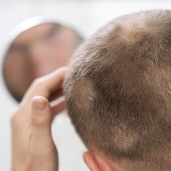
Perda de cabelo ou pelos em áreas arredondadas ou ovais, de origem genética e imunológica.
Queda intensa após pós-parto, estresse, cirurgias, febre, alterações de tireoide ou falta de ferro.
Recuo lento da linha frontal e das sobrancelhas, mais comum em mulheres na pós-menopausa.
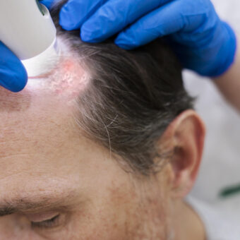
Lesões avermelhadas e descamativas no couro cabeludo, com tratamento para controle.
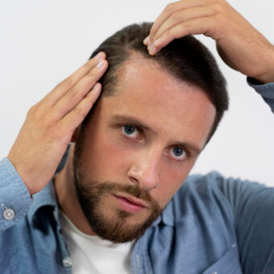
Inflamação com vermelhidão, oleosidade e descamação no couro cabeludo.
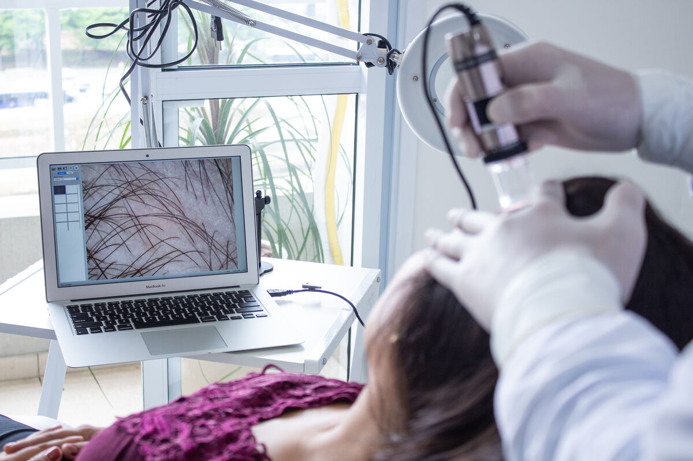
O PRC une estudo e análise científica para criar uma alternativa mais precisa, segura e eficiente para quem enfrenta queda de cabelo e calvície.
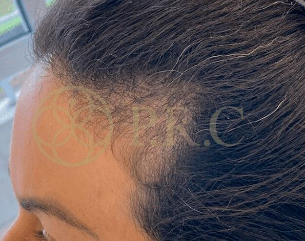
Antes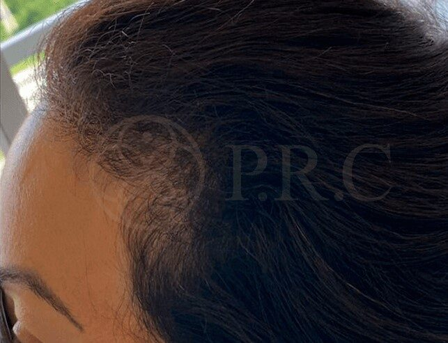
Depois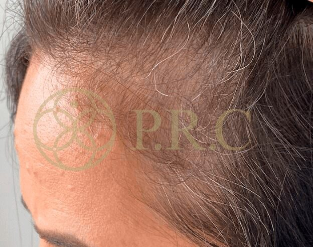
Antes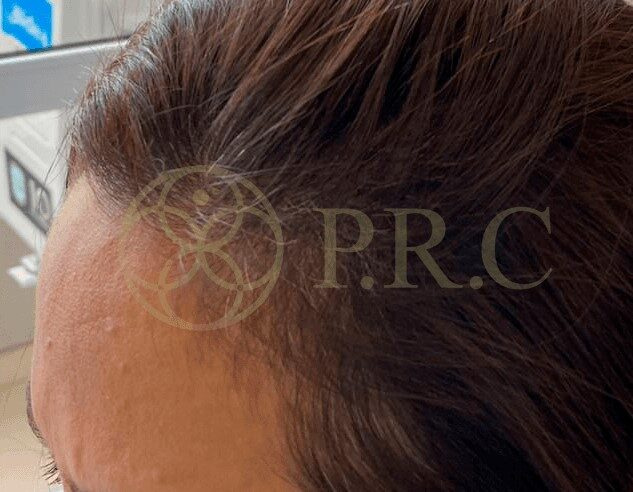
Depois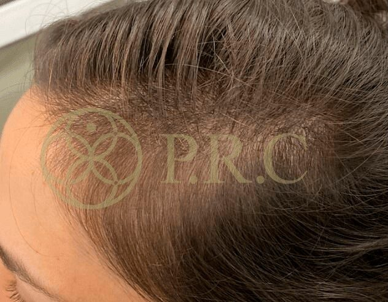
Antes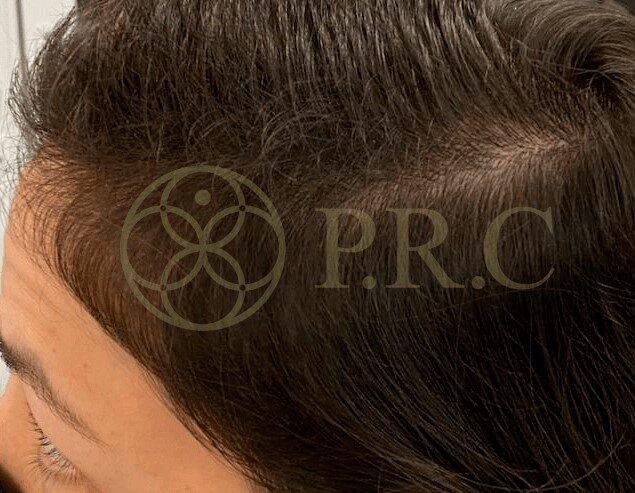
Depois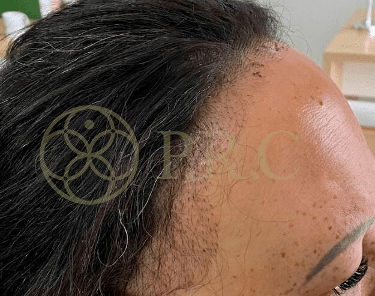
Antes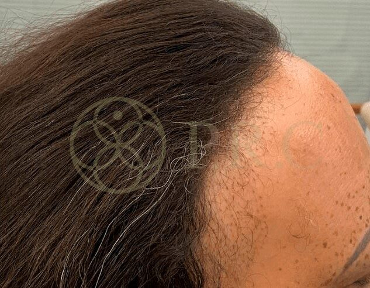
Depois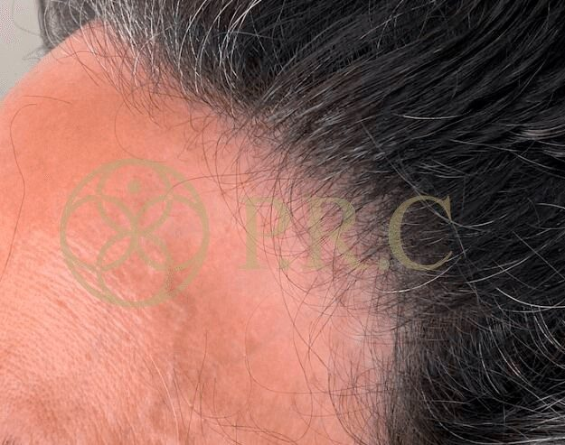
Antes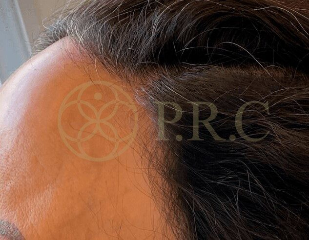
DepoisOs resultados variam de pessoa para pessoa, conforme o diagnóstico e a adesão ao tratamento.
★★★★★“Tenho alopecia há anos e só com o Dr. João consigo ter resultados satisfatórios a cada consulta. Profissional honesto que diz exatamente até onde pode chegar com o tratamento, dá dicas que vão além da medicação, fora a atenção e o carinho que ele e a Natasha tratam a gente. Maravilhosos!!”
Michelle Cativelli
★★★★★“Fui diagnosticada com alopecia androgenética, estava com muitas falhas no meu couro cabeludo, hoje já ando com o cabelo solto sem medo, zero queda, fios novos nascendo lindos e saudáveis.”
Ana Rocha Santos
★★★★★“Já passei em 2 consultas e estou tendo resultados que nunca tive com o tratamento convencional (Minoxidil). Estou muito satisfeita e feliz que finalmente encontrei um profissional tão competente.”
Karina Yamawaki
★★★★★“Logo na primeira consulta já fui diagnosticada, com muita clareza, paciência e sabedoria ele explica tudo… Estou em tratamento há 06 meses, com a alopecia bem controlada, crescendo novos fios. Indico de olhos fechados!”
Regiane de Sena Melo
★★★★★“Em apenas 3 meses de tratamento conseguimos um excelente resultado, que conforme avaliação do Dr. João seria esperado para 1 ano. Estou muito confiante no protocolo.”
Denise Giannucci
★★★★★“Não tenho nem palavras para descrever essa equipe maravilhosa, todos muito atenciosos e educados. Hoje foi meu primeiro retorno de 3 meses e o resultado foi surpreendente.”
Thais
Conversamos sobre quando a queda começou, sua rotina, saúde e o que você já tentou.
Análise detalhada do couro cabeludo e dos fios para entender o que está acontecendo.
Você sai sabendo o que provoca a sua queda, explicado com clareza.
Um tratamento pelo Método PRC desenhado para o seu caso, com acompanhamento.
Todos os nossos profissionais tricologistas são certificados e habilitados no método PRC. Nossa missão é entregar resultados de forma segura e eficiente, com integridade e humanização.
O sinal não é desconto: ele faz parte dos R$ 600 e é abatido do valor total da consulta.
Rua Catiguá, 159 – Conj. 910 · Tatuapé · São Paulo – SP
Escaneie o QR Code no app do seu banco ou copie o código:
Clique abaixo e nossa equipe envia os dados para o pagamento do sinal pelo WhatsApp.
Já pagou? Envie o comprovante para confirmarmos o seu horário:
Confirmar agendamento no WhatsAppNão. A consulta custa R$ 600. Os R$ 50 são um sinal para reservar o seu horário e são abatidos desse valor: no dia da consulta você paga os R$ 550 restantes. O total continua sendo R$ 600.
O sinal garante a reserva do seu horário na agenda da clínica. Assim que recebermos o comprovante, nossa equipe confirma o dia e o horário com você pelo WhatsApp.
Na consulta é feita uma avaliação completa do couro cabeludo e dos fios para identificar a causa da queda. A partir do diagnóstico, montamos um plano de tratamento personalizado pelo Método PRC, com tempo para tirar todas as suas dúvidas.
Nossa missão é entregar resultados de forma segura e eficiente, sem causar dor ou colaterais. O protocolo é definido conforme o seu caso.
Muitos pacientes percebem melhora a partir de 3 meses de tratamento. O tempo varia de acordo com o diagnóstico e com cada organismo.
Rua Catiguá, 159 – Conjunto 910 – Tatuapé, São Paulo – SP, CEP 03065-030. Local de fácil acesso.
Ainda com dúvidas? Fale com a gente no WhatsApp